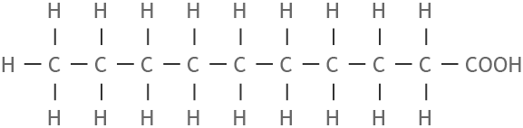
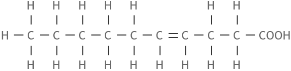
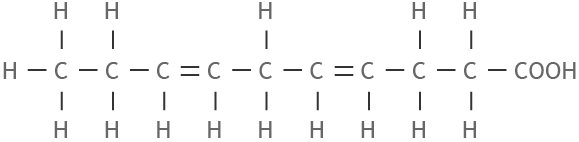
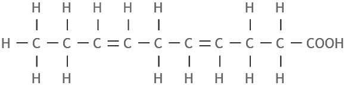

For at din krop kan fungere, har den brug for energi. Kroppen får energi bl.a. igennem det fedt, du spiser. Samtidig sætter noget af fedtet sig på kroppen og bliver på den måde et sted (et depot), hvor kroppen opbevarer energi og vitaminer. På den måde er fedt godt for kroppen. Fedt er med til at opbygge kroppens knogler og muskler.
MEN hvis du har for meget fedt i kroppens fedtdepoter, så er det ikke godt for kroppen, fordi det giver risiko for forskellige sygdomme - især de sygdomme, vi kalder hjerte-kar-sygdomme.
Men fedt er ikke bare fedt. Det indeholder forskellige syrer, som man også kalder fedtsyrer. Nogle fedtsyrer er helt livsnødvendige for din krop, dvs. du skal have dem.
Du skal derfor være klar over, hvor meget fedt, du spiser, og hvad det er for noget fedt, der er i maden.
Der er mere energi i fedt end i andre næringsstoffer, som kulhydrater og proteiner. 1 gram fedt har 38 kJ (kilojoule). Det er mere end dobbelt så meget energi som i 1 gram kulhydrat eller 1 gram protein.
Der er 4 forskellige typer af fedt, og nogle er mere sunde end andre:
1. Mættede fedtsyrer er ikke så sunde. Dem får du især, når du spiser kød, hårdt margarine og drikker mælkeprodukter. Hvis du spiser mad med meget mættede fedtsyrer, så stiger kolesterolet i blodet. Når kolesterolet i blodet stiger, så har du større risiko for hjerte-kar-sygdomme. Derfor er det en god idé at bruge de mælkeprodukter, der er magre (dvs. ikke har så meget fedt) og spise magert kød.
2. Enkelt umættede fedtsyrer er lidt sundere end mættet fedtsyre, og du får dem igennem bløde margariner, planteolier og i fede fisk.
3. Fler umættede fedtsyrer er mere sunde, og nogle af dem er livsnødvendige (dvs. du skal have dem). Dem får du igennem nødder, bløde margariner, planteolier og i fede fisk.
4. Transfedtsyrer er meget usunde. De findes bl.a. i friturestegt mad og det margarine, bageren bruger. De er meget dårlige for dit helbred. Lad derfor være med at spise meget fastfood og kager.
De fleste, der bor i Danmark, spiser for meget fedt og har brug for at spise mindre fedt. Mange madvarer kan købes både som almindelig type og en type med mindre fedt, som man kalder ”light”. Det kan være en hjælp for nogle mennesker, som vil spise mindre fedt. Men man kan fx også skære tyndere stykker af osten og lægge den på et tykkere stykke brød, så man spiser mere af det, der ikke feder, og mindre af det, der feder.
Næringsindhold i alle madvarer:
foodcomp.dkEnergi i mad:
altomkost.dk